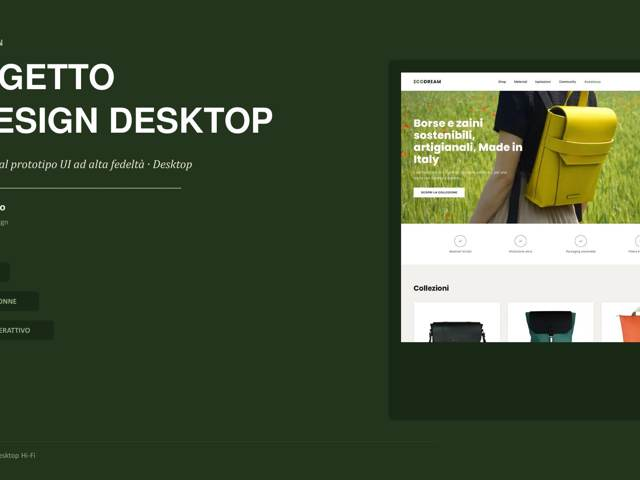
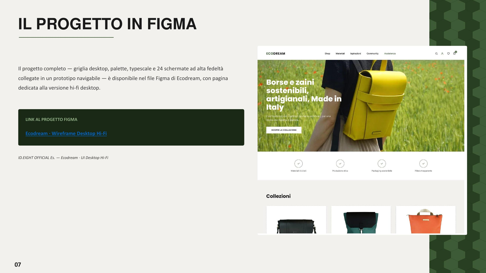

Il progetto
Partendo dai wireframe desktop, in questo esercizio ho costruito l'interfaccia visiva definitiva di Ecodream Design: 24 schermate ad alta fedeltà su una griglia a 12 colonne, con un design system coerente di colori, tipografia e componenti.
La persona di riferimento, "The Conscious Rebel" (25-45 anni, stile urbano minimalista), guida le scelte visive: materiali riciclati e produzione etica comunicati fin dalla hero, trasparenza sui prodotti resa evidente con badge e informazioni chiare.
Il risultato è un prototipo interattivo navigabile su Figma, che copre l'intero flusso da home a checkout, comprese le microinterazioni pensate per rendere l'esperienza d'acquisto più fluida.

Uno sguardo al dettaglio
La home page desktop ad alta fedeltà: hero con messaggio di posizionamento, badge di fiducia su materiali riciclati e produzione etica, griglia prodotti "Collezioni".